progressr 0.13.0 is on CRAN. In the recent releases, progressr gained support for using cli to generate progress bars. Vice versa, cli can now report on progress via the progressr framework. Here are the details. For other updates to progressr, see NEWS.

The progressr package, part of the futureverse, provides a minimal API for reporting progress updates in R. The design is to separate the representation of progress updates from how they are presented. What type of progress to signal is controlled by the developer. How these progress updates are rendered is controlled by the end user. For instance, some users may prefer visual feedback, such as a horizontal progress bar in the terminal, whereas others may prefer auditory feedback. The progressr package works also when processing R in parallel or distributed using the future framework.
Use ‘cli’ progress bars for ‘progressr’ reporting
In progressr (>= 0.12.0) [2022-12-13], you can report on progress using cli progress bar. To do this, just set:
progressr::handlers(global = TRUE) ## automatically report on progress
progressr::handlers("cli") ## ... using a 'cli' progress barWith these globals settings (e.g. in your ~/.Rprofile file; see below), R reports progress as:
library(progressr)
y <- slow_sum(1:10)
Just like regular cli progress bars, you can customize these in the same way. For instance, if you use the following from one of the cli examples:
options(cli.progress_bar_style = list(
complete = cli::col_yellow("\u2605"),
incomplete = cli::col_grey("\u00b7")
))you’ll get:
Configure ‘cli’ to Report Progress via ‘progressr’
You might have heard that purrr recently gained support for reporting on progress. If you didn’t, you can read about it in the tidyverse blog post ‘purrr 1.0.0’ on 2022-12-20. The gist is to pass .progress = TRUE to the purrr function of interest, and it’ll show a progress bar while it runs. For example, assume we the following slow function for calculating the square root:
slow_sqrt <- function(x) { Sys.sleep(0.1); sqrt(x) }If we call
y <- purrr::map(1:30, slow_sqrt, .progress = TRUE)we’ll see a progress bar appearing after about two seconds:
This progress bar is produced by the cli package. Now, the neat thing with the cli package is that you can tell it to pass on the progress reporting to another progress framework, including that of the progressr package. To do this, set the R option:
options(cli.progress_handlers = "progressr")This causes all cli progress updates to be reported via progressr, so if you, for instance, already have set:
progressr::handlers(global = TRUE)
red_heart <- cli::col_red(cli::symbol$heart)
handlers(handler_txtprogressbar(char = red_heart))the above purrr::map() call will report on progress in the terminal using a classical R progress bar tweaked to use red hearts to fill the bar;
As another example, if you set:
progressr::handlers(global = TRUE)
progressr::handlers(c("beepr", "cli", "rstudio"))R will report progress concurrently via audio using different beepr sounds, via the terminal as a cli progress bar, and the RStudio’s built-in progress bar - whenever progress is reported via the progressr framework or the cli framework.
Customize progress reporting when R starts
To safely configure the above for all your interactive R sessions, I recommend adding something like the following to your ~/.Rprofile file (or in a standalone file using the startup package):
if (interactive() && requireNamespace("progressr", quietly = TRUE)) {
## progressr reporting without need for with_progress()
progressr::handlers(global = TRUE)
## Use 'cli', if installed ...
if (requireNamespace("cli", quietly = TRUE)) {
progressr::handlers("cli")
## Hand over all 'cli' progress reporting to 'progressr'
options(cli.progress_handlers = "progressr")
} else {
## ... otherwise use the one that comes with R
progressr::handlers("txtprogressbar")
}
## Use 'beepr', if installed ...
if (requireNamespace("beepr", quietly = TRUE)) {
progressr::handlers("beepr", append = TRUE)
}
## Reporting via RStudio, if running in the RStudio Console,
## but not the terminal
if ((Sys.getenv("RSTUDIO") == "1") &&
!nzchar(Sys.getenv("RSTUDIO_TERM"))) {
progressr::handlers("rstudio", append = TRUE)
}
}See the progressr website for other, additional ways of reporting on progress.
Now, go make some progress!
Other posts on progressr reporting
- progressr 0.10.1: Plyr Now Supports Progress Updates also in Parallel, 2022-06-03
- progressr 0.8.0 - RStudio’s Progress Bar, Shiny Progress Updates, and Absolute Progress, 2021-06-11
- e-Rum 2020 Slides on Progressr, 2020-07-04
- See also ‘progressr’ tag.